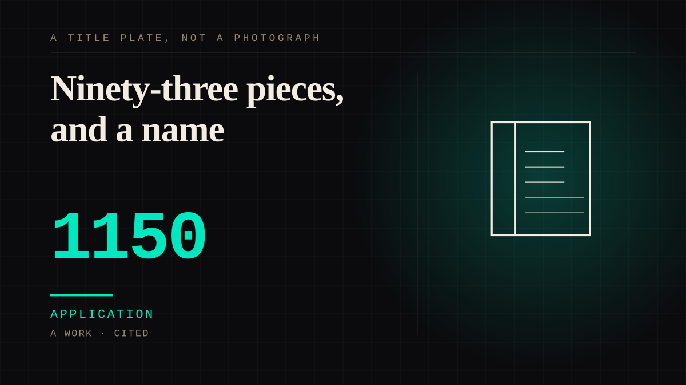

A work · 1150–1200 · Medieval
Ninety-three pieces, and a name
Walrus-ivory chess pieces from around 1150, buried on the Isle of Lewis and dug up in 1831, now divided between two museums and at least four incomplete sets. Two of them are probably replacements made in another workshop to replace pieces that had been lost.

The one case on this site where the attachment and its object are both fully documented, from twelfth-century Norway to a museum curator writing in 2012. James Robinson, curator of Late Medieval Collections at the British Museum, on how people meet them: they visit the museum and are 'completely transfixed', and 'instinctively naming one of them "Noggin"' - he and Irving Finkel did exactly that. The name then travelled further than the object: the animator Peter Firmin drew Noggin with his queen, and a manga artist built two exhibitions and a publication with the museum out of them. What makes it sharper than a curiosity is that these are carved mythological types rather than portraits - several are read as berserkers from Snorri's Heimskringla - and that the hoard comprises at least four incomplete sets with two pieces probably made in a different workshop to replace lost ones. So the figures people have named and bonded with for two centuries include at least two replacements, and no visitor can tell which. A counter clerk who cannot remember you, carved in ivory, and shipped in pieces.
Application. One-sided attachment put to work on purpose. Creator economies, community, fandom as infrastructure, and the things that genuinely help people. Not automatically good - a tool with an obvious use is a tool that will also get a bad one.
Where it sits
1000 1000-1499 · 1150 1499
Provenance · 4 source record(s)
- retrievableThe object and its disassembly: 12th-century walrus ivory and whales' teeth, discovered 1831 on the Isle of Lewis; the hoard contained 94 objects - 78 chess pieces, 14 tablemen and a belt buckle - of which 82 pieces are owned by the British Museum and 11 by the National Museum of Scotland; the pieces come from at least four distinct but incomplete sets, nine cannot be assigned to any group, and 'it is not clear if a single complete period-accurate set can be assembled from the pieces'. Some pieces bore traces of red stain, indicating red and white were used to distinguish the two sides rather than the modern black and white. All the pieces in the back rank are sculptures of human figures.Lewis chessmen. Wikipedia. ↗
- retrievableThe two replacement pieces - a king and a warder - which 'may have been made at a different workshop entirely, perhaps to replace missing or broken pieces'.Lewis chessmen. Wikipedia, citing National Museums Scotland. ↗
- unverifiedThe attachment, documented from inside the institution: 'From the very moment of their discovery in 1831, the Lewis Chessmen have captured the imagination of all who encounter them. They, like Irving Finkel, visited the museum and were completely transfixed by the chessmen, instinctively naming one of them "Noggin."' The name then propagated: Peter Firmin drew Noggin with his queen, and Hoshino Yukinobu collaborated with the British Museum on two exhibitions and a publication. Also the character-level detail: 'a delightful sculpture in miniature, with a specific, individualized character' - kings sitting with swords on their laps, some long-haired and bearded and others clean shaven, knights with distinct headgear, different shields and different shaggy ponies.Robinson, J. (2012, February 17). Under Their Spell. Exhibition blog for The Game of Kings: Medieval Ivory Chessmen from the Isle of Lewis, The Metropolitan Museum of Art. Author identified as Curator of Late Medieval Collections, Department of Prehistory and Europe, The British Museum. ↗
- unverifiedOrigin and identification of the figures: the hoard was found in 1831 and the pieces carved in the 12th century, at a time when the seat of political and ecclesiastical control of the Isle of Lewis was in Norway and shipping lanes from Norway to Ireland passed the Outer Hebrides, so it may represent a merchant's wares lost or abandoned there. 'Scholars have identified such figures as berserkers (the soldiers of Odin from Norse mythology), known from the Heimskringla - the Chronicle of the Kings of Norway - of the Icelandic poet Snorri Sturluson'. The pieces come from at least four distinct but incomplete sets, and among the earliest examples in which both bishops and queens are found.The Game of Kings: Medieval Ivory Chessmen from the Isle of Lewis. The Metropolitan Museum of Art, press release, 15 November 2011. ↗
CHARACTER The historic as character
Connected · 3 out, 2 in
It sits in
The full timeline → · The database → · See it in the atlas →